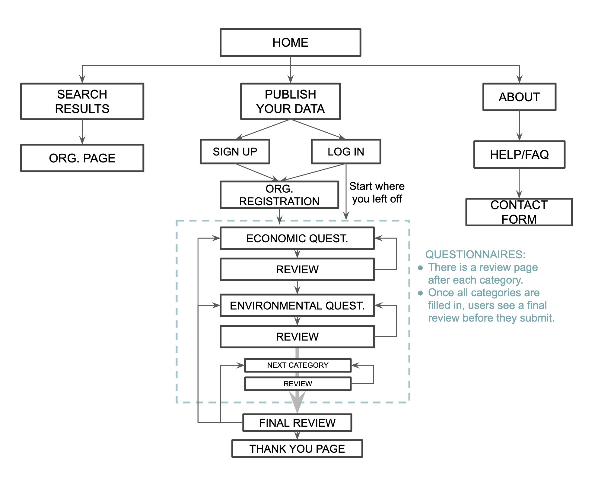

I started my research from ‘what is a sustainability report?’. Then checked major initiatives’ websites such as UN Global Compact, GRI Sustainability Disclosure Database to check what information and data is currently disclosed and how it is shown.
In addition, I researched how to design a survey by reading multiple articles and analysing survey/application platforms, such as GOV.UK and Survey Monkey.
Sustainability Report - Designing a survey platform
My Role
As a solo designer, I conducted:
- Competitive analysis
- User journeys
- Site mapping
- Wireframes
- Low-High prototype
UX GOAL
To design a platform:
- for organisations to access and input their sustainability data for reporting purposes.
- where public users can access disclosed sustainability data.
RESEARCH
IDENTIFIED PROBLEMS
- There are multiple reporting frameworks different metrics
- There is no centralised public repository that discloses sustainability data using the same metrics
- Researchers can only collect the necessary company information using multiple publicly disclosed data sources
- No one likes spending time on a long report!
PERSONAS

USER FLOWS
SITE MAPPING
SKETCHING
Card sorting determined three main areas for the app as ‘Dashboard’, ‘How to use’ and ‘Builders’ page. Once wireframes were created, site mapping was revised and updated where necessary.